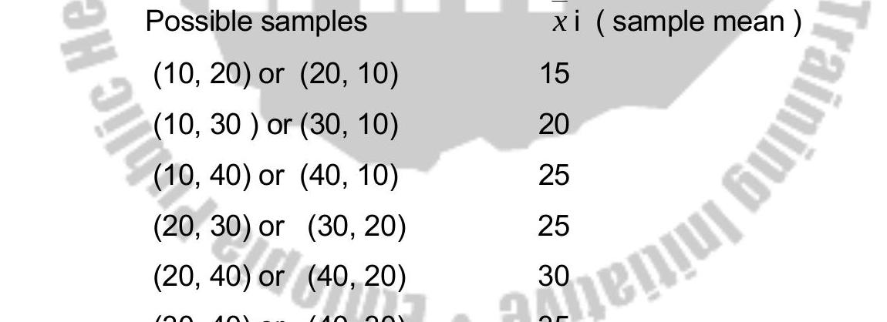

CHAPTER SEVEN
Estimation (Continued)
7.5 Interval estimation (large samples) (Continued)
Confidence Interval for the Population Proportion ($P$) (Large Samples)
When the sample size is large (typically requires $np \ge 5$ and $nq \ge 5$, where $q=1-p$), the sampling distribution of the sample proportion ($p$) can be approximated by a normal distribution with mean $P$ and standard error $\sqrt{P(1-P)/n}$.
Since $P$ is unknown, we estimate the standard error using the sample proportion $p$: Standard Error (SE) $\approx \sqrt{p(1-p)/n}$.
The formula for a $(1-\alpha) \times 100\%$ confidence interval for $P$ is:
Where:
- $p = x/n$ is the sample proportion (x = number of successes).
- $n$ is the sample size.
- $Z_{\alpha/2}$ is the critical value from the standard normal distribution.
Example: In a sample of 200 people from a community, 60 are found to be hypertensive. Construct a 95% confidence interval for the true proportion of hypertensive individuals in the community.
Here, $n=200$, $x=60$.
Sample proportion $p = x/n = 60/200 = 0.30$.
Check large sample condition: $np = 200(0.30) = 60 \ge 5$. $nq = 200(1-0.30) = 200(0.70) = 140 \ge 5$. Condition met.
For 95% confidence, $Z_{\alpha/2} = 1.96$.
Standard Error (SE) = $\sqrt{p(1-p)/n} = \sqrt{0.30(0.70)/200} = \sqrt{0.21/200} = \sqrt{0.00105} \approx 0.0324$.
Margin of Error (ME) = $Z_{\alpha/2} \times SE = 1.96 \times 0.0324 \approx 0.0635$.
Confidence Interval = $p \pm ME = 0.30 \pm 0.0635$.
The 95% CI is $(0.30 - 0.0635, 0.30 + 0.0635) = (0.2365, 0.3635)$.
Interpretation: We are 95% confident that the true proportion of hypertensive individuals in the community is between 23.65% and 36.35%.
Confidence Interval for the Population Mean ($\mu$) (Small Samples, $\sigma$ Unknown)
When the population standard deviation ($\sigma$) is unknown and the sample size is small ($n < 30$), we cannot reliably use the Z-distribution unless the original population is known to be normally distributed.
If the population is assumed to be approximately normally distributed, we use the t-distribution (also known as Student's t-distribution) instead of the Z-distribution.
The t-distribution is similar in shape to the Z-distribution (bell-shaped, symmetric about 0) but has heavier tails, reflecting the increased uncertainty due to estimating $\sigma$ with $s$ from a small sample.
The shape of the t-distribution depends on the degrees of freedom (df), which for a single sample mean is $df = n-1$. As $df$ increases, the t-distribution approaches the Z-distribution.
The formula for a $(1-\alpha) \times 100\%$ confidence interval for $\mu$ using the t-distribution is:
Where:
- $\bar{x}$ is the sample mean.
- $s$ is the sample standard deviation.
- $n$ is the sample size.
- $t_{\alpha/2, df}$ is the critical value from the t-distribution with $df = n-1$ degrees of freedom that leaves an area of $\alpha/2$ in the upper tail. This value is found using a t-table (like Table A3 in the appendix) or statistical software.
Example: A sample of 10 patients ($n=10$) has a mean systolic blood pressure (SBP) of $\bar{x} = 125$ mmHg with a sample standard deviation $s = 8$ mmHg. Assuming SBP is normally distributed, construct a 95% confidence interval for the true mean SBP.
Here, $n=10$ (small sample), $\bar{x}=125$, $s=8$.
Degrees of freedom $df = n-1 = 10-1 = 9$.
For 95% confidence, $\alpha = 0.05$, $\alpha/2 = 0.025$.
Find the critical value $t_{0.025, 9}$ from a t-table. Looking up df=9 and upper tail area 0.025, we find $t_{0.025, 9} = 2.262$.
Standard Error (SE) = $s / \sqrt{n} = 8 / \sqrt{10} \approx 8 / 3.162 \approx 2.53$.
Margin of Error (ME) = $t_{\alpha/2, df} \times SE = 2.262 \times 2.53 \approx 5.72$.
Confidence Interval = $\bar{x} \pm ME = 125 \pm 5.72$.
The 95% CI is $(125 - 5.72, 125 + 5.72) = (119.28, 130.72)$ mmHg.
Interpretation: We are 95% confident that the true mean systolic blood pressure for this population lies between 119.28 mmHg and 130.72 mmHg.
Factors Affecting Confidence Interval Width
The width of a confidence interval (Width = 2 * Margin of Error) depends on:
- Confidence Level $(1-\alpha)$:** Higher confidence level (e.g., 99% vs 95%) leads to a larger critical value ($Z_{\alpha/2}$ or $t_{\alpha/2, df}$) and thus a wider interval.
- Sample Size ($n$):** Larger sample size leads to a smaller standard error ($s/\sqrt{n}$ or $\sqrt{p(1-p)/n}$) and thus a narrower (more precise) interval.
- Variability in the Data ($s$ or $p(1-p)$):** Greater variability leads to a larger standard error and thus a wider interval.
7.6 Sample size estimation
Before conducting a study, it is crucial to determine the appropriate sample size needed to achieve the desired precision in estimation.
Sample size calculations are based on rearranging the margin of error formula from the confidence interval.
Sample Size for Estimating Population Mean ($\mu$)
The margin of error (ME) for estimating $\mu$ (large sample) is $ME = Z_{\alpha/2} (\sigma/\sqrt{n})$.
Solving for $n$, we get the formula for the required sample size:
Where:
- $n$ = required sample size (always round up to the next whole number).
- $Z_{\alpha/2}$ = Z-value for the desired confidence level.
- $\sigma$ = population standard deviation.
- $ME$ = desired margin of error (maximum acceptable difference between $\bar{x}$ and $\mu$).
Estimating $\sigma$:** Since the population standard deviation ($\sigma$) is usually unknown before the study, it needs to be estimated using:
- Results from previous similar studies.
- A pilot study.
- An estimate based on the range (e.g., $\sigma \approx \text{Range}/4$ or $\sigma \approx \text{Range}/6$).
Example: We want to estimate the mean weight of students with 95% confidence and a margin of error of $\pm 2$ kg. From a previous study, the standard deviation was estimated to be $\sigma = 10$ kg. What sample size is needed?
Here, Confidence = 95% $\implies Z_{\alpha/2} = 1.96$.
$ME = 2$ kg.
$\sigma = 10$ kg.
Always round up: $n = 97$.
We need a sample size of at least 97 students.